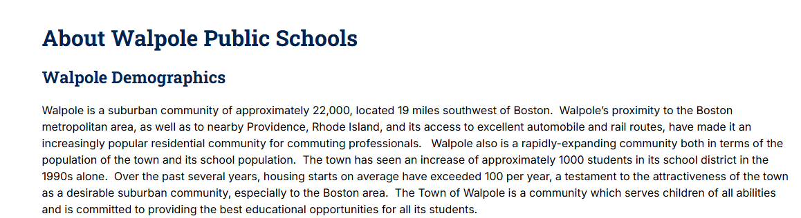

About Walpole Public Schools
Walpole Demographics
Walpole is a suburban community of approximately 22,000, located 19 miles southwest of Boston. Walpole’s proximity to the Boston metropolitan area, as well as to nearby Providence, Rhode Island, and its access to excellent automobile and rail routes, have made it an increasingly popular residential community for commuting professionals. Walpole also is a rapidly-expanding community both in terms of the population of the town and its school population. The town has seen an increase of approximately 1000 students in its school district in the 1990s alone. Over the past several years, housing starts on average have exceeded 100 per year, a testament to the attractiveness of the town as a desirable suburban community, especially to the Boston area. The Town of Walpole is a community which serves children of all abilities and is committed to providing the best educational opportunities for all its students.
Demographic ProfileDESE School and District Report Cards
Just as a student's report card shows how they are doing in different classes, school and district report cards from the Massachusetts Department of Elementary and Secondary Education (DESE) are designed to show parents and community members how a school or district is doing in different areas. Report cards highlight a school or district's strengths as well as any challenges that need to be addressed in order to make sure the needs of all students are being met. Massachusetts sees families and the community as important partners in a school's success and spent time listening to parents to make sure the new report cards were designed as easy-to-use tools that provide meaningful information.
DESE Report CardsContact US